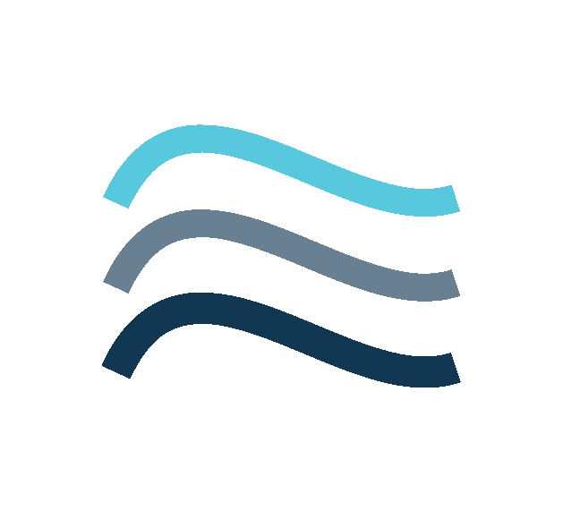
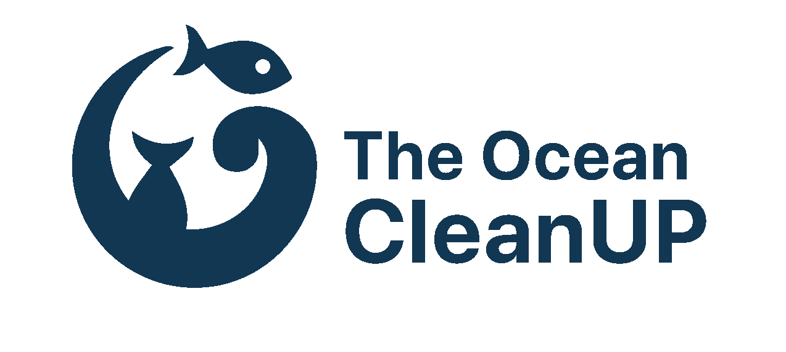
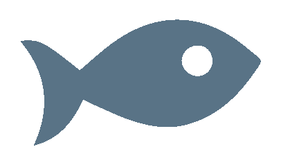

<!DOCTYPE html>
<html lang="en">
<head>
    <meta charset="UTF-8">

    <link rel="stylesheet" href="css/reset.css" />
    <link rel="stylesheet" href="css/system.css" />
    <link href="https://fonts.googleapis.com/css?family=Alef:400,700" rel="stylesheet">

    <script type="text/javascript" src="js/jquery-3.3.1.min.js"></script>
    <script src="js/rellax.min.js"></script>
    <script type="text/javascript" src="js/parallax_scroll.js"></script>
    <script src="js/practice3.js"></script>


    <title>1st CleanUp System</title>
</head>


<body>

<div class="ham">
    <h2> <a href="index.html"> The Ocean CleanUP </a> <br> <a href="pollution.html"> Ocean Pollution </a>
        <br>  <a href="system.html"> 1st CleanUp System </a> </h2>
    <div class="menu2">  </div>
</div>

<div class="bar">
    <div class="logo">  </div>
    <h1>1st CleanUp System</h1>
    <div class="menu">  </div> </div>
</div>

<div class="container">

    <div class="photo_start rellax" data-rellax-speed="-10">
    </div>


    <div class="wave_1 rellax" data-rellax-speed="-6">
        
        <h3 class="sub1">SYSTEM 001 HAS LAUNCHED INTO THE PACIFIC</h3>
        <p1 class="para1">
            After 5 years of research, engineering and testing, we launched the world’s first ocean cleanup system
            from San Francisco Bay, marking the start of the cleanup. The system is now on its way to an intermediary
            test stop, 250-350 nautical miles offshore for a 2-week trial before continuing its journey toward the Great
            Pacific Garbage Patch, 1,200 nautical miles offshore, to start the cleanup.
        </p1>
        <p1 class="para2">
            The journey of the tow through the bay was livestreamed from 12 pm PT until the system had left the bay,
            crossed Golden Gate Bridge and sailed off onto the Pacific Ocean.


        </p1>
    </div>

    <div class="wave_2 rellax" data-rellax-speed="4"> 
        <h3 class="sub1_2">TAKE ADVANTAGE OF NATURAL OCEANIC FORCES</h3>
        <p1 class="para1_2">
            Both the plastic and system are being carried by the current. However, wind and waves propel only the system,
            as the floater sits just above the water surface, while the plastic is primarily just beneath it. The system
            thus moves faster than the plastic, allowing the plastic to be captured.
        </p1>
        <h3 class="sub2_2">CREATE A COASTLINE WHERE THERE ARE NONE</h3>
        <p1 class="para2_2">
            The system consists of a 600-meter-long floater that sits at the surface of the water and a tapered
            3-meter-deep skirt attached below. The floater provides buoyancy to the system and prevents plastic from
            flowing over it, while the skirt stops debris from escaping underneath.
        </p1>

        
    </div>


    <div class="wave_3 rellax" data-rellax-speed="10">
        <h3 class="sub1_3">START PACIFIC CLEANING</h3>

        <p1 class="para1_3">
            Our first cleanup system will represent our most important milestone to date and is the culmination of years
            of preparation. Once operational, it will become the first time vast amounts of plastic will be extracted
            from the ocean. By then we will have proven our technology concept, opening the gates for the large-scale
            rollout. <br> <br>

            These are the major steps to be taken on the road to the cleanup: 
            <br> <br>
            1. Tow test (Q2)<br>
            A 120-meter segment will be towed approximately 50 nautical miles offshore of San Francisco to a designated
            test pattern. A vessel will tow the unit in a multitude of directions to test the hydrodynamic behavior of
            the system. For more details, read our update.
        </p1>

        <p1 class="para2_3">
            2. Pacific Trials (Q3)<br>
            On September 8, we will launch System 001 from San Francisco, out to the Pacific. The 600-meter system will
            be towed approximately 240 nautical miles off the coast for a final test and rehearsal before towed to the
            patch. The Pacific trials are expected to last about 2 weeks. This is when the system will be launched in
            its operational configuration for the first time. To find out more about the schedule of the day of the
            launch, please visit our System 001 page. <br> <br>
            3. Launch to the Great Pacific Garbage Patch (Q3/Q4) <br>
            After the trials, System 001 will be towed out to the Great Pacific Garbage Patch, approximately
            1200 nautical miles offshore, where it will be launched in operational configuration and start the cleanup.

        </p1>
        


    </div>


</div>


</body>
</html>